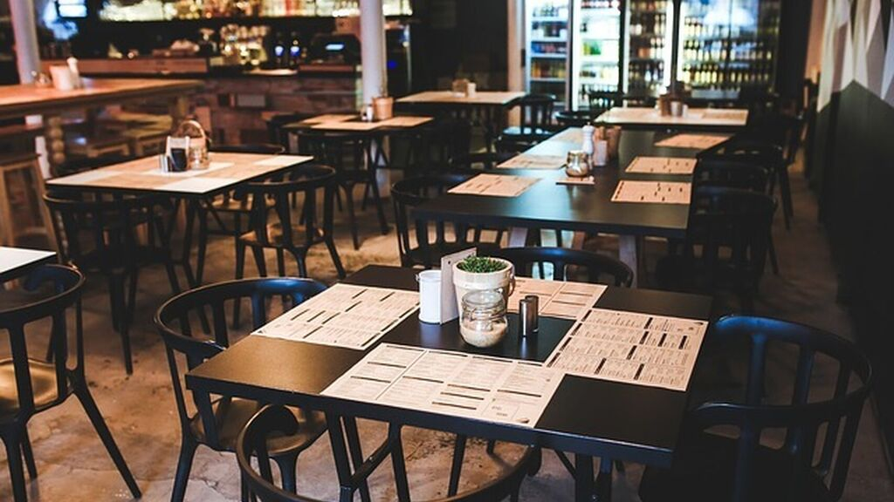

El beneficio de Google sube un 2,7% pese a la caída en la publicidad en marzo
El beneficio trimestral de la multinacional subió un 2,7% hasta los 6.836 millones, y el resultado operativo un 19% más, hasta los 8.000 millones. El beneficio por acción fue de 9,87 dólares, cuando el consenso del mercado esperaba 10,80 dólares. Los gastos de la compañía se elevaron un 12%, hasta 33.200 millones, aunque ha empezado a aplicar alguna medida de austeridad, como la reducción de contrataciones. La ralentización en el crecimiento de los ingresos responde a que el negocio del grupo depende en más de un 80% de la publicidad y sectores que reportan muchas ganancias a Google, como los viajes, los restaurantes, el comercio minorista y el de la automoción, están casi parados como consecuencia de la pandemia. Según las estimaciones de RBC Capital Markets, solo el sector de los viajes representa en torno a un 15% de los ingresos de la multinacional. La directora financiera de Alphabet, Ruth Porat, reconoció al presentar los resultados que la mayor parte del crecimiento se produjo en los dos primeros meses del año, mientras que en marzo experimentaron "un descenso significativo de los ingresos por publicidad", a medida que empezaron a aplicarse las medidas de confinamiento en todo el mundo. Entre enero y marzo, las ventas de anuncios fueron de 33.800 millones, un 10% más que en primer trimestre del año pasado. Pero Porat señaló a los analistas que mientras los usuarios buscan más en Google, los anunciantes están recortando gastos. "A partir de hoy, anticipamos que el segundo trimestre será difícil para nuestro negocio de publicidad", admitió.

Comercios y restaurantes podrán reabrir al público desde el 11 de mayo con severas restricciones de aforo
En esta, que comenzará el próximo lunes, podrán empezar a abrir comercios que puedan dar servicio con cita previa y atención individual, contando con mostrador, mamparas o garantizando las medidas de separación siempre que esto no sea posible. "Cuando el servicio profesional requiera tener contacto con el cliente será obligatorio el uso de medidas de protección como mascarilla o guantes", establece el texto. Esto incluiría, por ejemplo, a peluquerías, ferreterías, o cualquier otro tipo de negocio que permita adaptarse a una atención individualizada con cita previa. Una condición que desaparece en la fase 1, que comenzaría el 11 de mayo si se van cumpliendo los condicionantes que fija el Gobierno respecto al desarrollo de la epidemia. Desde entonces la apertura comercial sería generalizada, incluyendo por ejemplo tiendas de ropa, aunque excluye a los comercios que están dentro de centros comerciales salvo aquellos que ya exceptuaba el real decreto del estado de alarma. Sin embargo, aquí comienzan las limitaciones. El aforo estará limitado al 30%, se deberá garantizar una distancia mínima de dos metros entre clientes o, cuando no sea posible, solo podrá haber un cliente en el establecimiento. Además, deberán establecer un horario de atención preferente para personas mayores de 65 años. Al menos en la documentación inicial remitida por Moncloa no se indican otro tipo de aspectos como la protección que deberán llevar los trabajadores o los propios clientes. En esta fase, el Gobierno también contempla que vuelvan a abrirse mercadillos al aire libre a propuesta de los ayuntamientos "con condiciones de distanciamiento entre puestos" y una "delimitación del mercado ambulante para correcto control del aforo por las fuerzas de seguridad", dice la documentación. Estos mercadillos tendrán una limitación inicial del 25% de los puestos que normalmente se instalan, o un aumento de la superficie . Limitación inicial al 25% de los puestos habituales o aumento de superficie para asegurar las distancias. En la fase 2, que comenzaría el 25 de mayo en el mejor de los casos, ya se establece la apertura de los centros y parques comerciales aunque prohibiendo la permanencia en zonas comunes o áreas recreativas, que solo serán zonas de paso. Para todos los comercios el aforo podrá crecer hasta el 40% del total, siempre garantizando los dos metros de distancia y los horarios para los mayores de 65 años. En los mercadillos, lo que era una limitación del 25% a los puestos pasará a ser del 33% de los habituales. También podrán abrir autoescuelas o academias. La tercera fase comenzaría el 8 de junio, siempre que se cumpla el escenario más optimista. Aquí las novedades son que las zonas comunes y recreativas de los centros comerciales podrán utilizarse, y que las restricciones de aforo serán de la mitad de lo habitual, siempre conservando dos metros de distancia. También crecerán hasta el 50% los puestos de los mercadillos.
Claves de la desescalada: cuándo abrirán los colegios y cómo serán las vacaciones
La Fase 0 aliviará parcialmente el confinamiento, aunque los cambios de cara al ciudadano son leves. Además de las salidas de los menores de 14 años aprobadas el pasado sábado (el paseo de hasta tres niños con un acompañante adulto, con restricciones de tiempo y espacio), se permitirán los paseos en términos generales y los desplazamientos para el cuidado de huertos. También se completará la incorporación al trabajo de los trabajadores sociales. Comenzarán los entrenamientos deportivos individuales de deportistas federados y ligas profesionales. En el comercio, será posible la realización de actividades con cita previa "para la atención individual de los clientes". En restauración se permitirá recoger comida preparada en un restaurante. Asimismo, comenzarán los entrenamientos deportivos individuales de deportistas federados y ligas profesionales y se permitirá la actividad deportiva sin contacto.
Más allá de las aperturas con cita previa o a recoger comida preparada, el comercio empezará a abrir en el inicio de la fase 1, es decir, a partir del 11 de mayo. En esta fase podrán abrir los establecimientos comerciales, excluyendo los que formen parte de centros comerciales. Habrá una limitación del 30% en el aforo y se exigirá una distancia mínima de dos metros entre clientes. Si esto no es posible, solo podrá entrar un cliente; además, se fijarán horarios especiales para mayores de 65 años. Se podrán abrir los mercadillos en la calle, pero con un 25% de los puestos. También abrirán los restaurantes, pero solamente las terrazas y con una limitación del 30% de las mesas (salvo que el Ayuntamiento permita aumentar la superficie). Igualmente se abrirán los hoteles, excluyendo las zonas comunes, así como los lugares de culto religioso, también con limitación de un tercio aforo, y los centros de entrenamiento deportivo profesional.
La pandemia del coronavirus transformará para siempre el orden mundial
El coronavirus ha atacado con una escala y una ferocidad sin precedentes. Su propagación es exponencial: los casos en EEUU se duplican cada cinco días. En el momento de escribir esto, no hay cura. Los suministros médicos son insuficientes para hacer frente a la creciente oleada de casos. Las unidades de cuidados intensivos están a punto, e incluso más allá, de verse desbordadas. Los test no nos sirven para la tarea de identificar la extensión real de la infección, y mucho menos para revertir su propagación. Una vacuna exitosa podría estar a 12 o 18 meses de distancia. El Gobierno de los Estados Unidos ha hecho un buen trabajo para evitar una catástrofe inmediata. Pero la prueba definitiva llegará cuando veamos si la propagación del virus puede ser detenida y luego revertida de una manera y a una escala que mantenga la confianza del público en la capacidad de los americanos de gobernarse a sí mismos. El esfuerzo de la crisis, por muy vasto y necesario que sea, no debe desplazar la urgente tarea de lanzar una iniciativa paralela para preparar la transición al orden poscoronavirus.